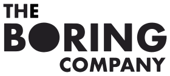

The Boring Company
 The Boring Company est une société de construction de tunnel fondée par Elon Musk en 2016 après avoir évoqué l'idée de faire des tunnels sur son compte Twitter. Musk faisait alors mention de la difficulté de circuler à Los Angeles et des limitations de l'actuel réseau de transport en 2-D comme source d'inspiration pour son projet de tunnel.Le transport s’effectuera en plaçant les voitures sur des wagons qui voyageront à 200 km/h au travers des tunnels.
En janvier 2018, pour financer de projet, la société commercialise un lance-flamme-chalumeau, qu'elle nomme ironiquement Not A Flamethrower (« Pas un lance-flamme »).
Paypal
En mars 1999, Musk fonde une banque en ligne nommée X.com. X.com cessera par la suite ses services bancaires, mais la société PayPal de paiement en ligne, qu'elle avait acquise en mars 2000, rencontre un très grand succès. En février 2001, X.com change de nom pour Paypal. En octobre 2002, Paypal est vendu à eBay pour 1,5 milliard de dollars. Au moment de la vente, Musk possède 11,7 % de Paypal (180 millions de dollars). Le 5 juillet 2017, Elon Musk rachète le nom de domaine x.com à Paypal. Le 14 juillet 2017, Musk annonce le lancement de x.com sur Twitter. Le site est composé d'une seule page visible, une simple lettre x en haut à gauche, sans aucun habillage graphique.
Hyperloop
En septembre 2012, Elon Musk annonçait un nouveau mode de transport (des capsule subsonique peuvent deplacé des passagers en 1200 km/h), dont il souhaite qu'il soit au moins deux fois plus rapide que l'avion et fonctionnant à l'énergie solaire. Le 12 août 2013, il présente son projet Hyperloop dont il a encouragé la réalisation par d'autres entreprises via un concours organisé par SpaceX. Depuis ce concours, des startups consacrées à la mise en place et au développement de l'Hyperloop sont nées. En 2015-2016, Elon Musk ne dirige plus aucun projet d'Hyperloop, mais sa société SpaceX continue d'organiser des compétitions et des hackathons.